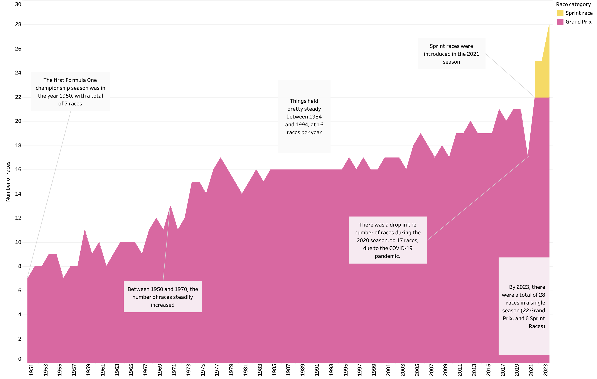

Formula 1 races over the years
This personal project explores the number of Formula 1 races each year between 1950 and 2023.
The growing success and popularity of F1 is also reflected in the number of races being run in each calendar year, with the record number of races in latter years following the introduction of sprint races. I downloaded the original dataset as a .csv from the Ergast Developer API (↗) website and processed the data in R prior to visualizing it in Tableau.
A static screenshot is included below, with the full interactive visualisation on Tableau Public (↗).
